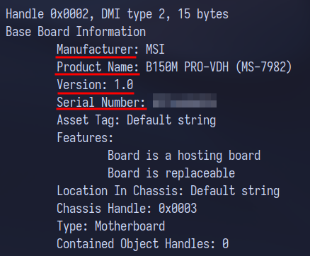
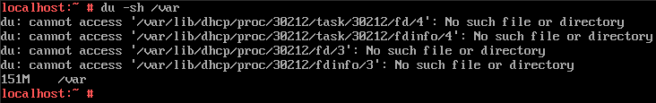

Diagnostyka systemu Linux
Zobacz podsumowanie .
lsblk
Podaje informacje na temat dysku twardego . Aby
wyświetlić konkretne informacje skorzystaj z przełącznika
-o i podaj nazwy kolumn.
Najważniejsze kolumny
NAME - nazwa urządzeniaFSTYPE - system plikówMODEL - model urządzeniaSERIAL - numer seryjnySIZE - pojemność urządzenia
Przykład
Polecenie lsblk
lscpu
Podaje informacje o procesorze .
Niektóre z informacji które możemy znaleźć:
Nazwa
Taktowanie
Liczba rdzeni
Wielkość pamięci L1 Cache
Wielkość pamięci L2 Cache
Przykład
Polecenie lscpu
lspci
Wyświetla urządzenia PCI w tym kartę graficzną i
kartę sieciową .
Karta graficzna
Polecenie lspci
Użyta komenda: lspci -v | more
Karta sieciowa
Polecenie lspci
Użyta komenda: lspci -v | more
Plik /etc/os-release
Podaje nazwę i wersje systemu
operacyjnego .
Przykład
Plik /etc/os-release
Aby wyświetlić zawartość pliku korzystam z polecenia
cat .
uname
Podaje m.in. wersję jądra (przełącznik -r) i
architekturę (przełacznik -p) .
Wersja jądra
uname -r
Architektura
uname -p
dmidecode
Dostarcza informacji na temat m.in. pamięci RAM, procesorze,
płycie głównej . Aby wybrać konkretne urządzenie skorzystaj z
przełącznika -t .
Pamięć RAM
dmidecode -t memory
Użyta komenda: dmidecode -t memory
Płyta główna

dmidecode -t baseboard
Użyta komenda: dmidecode -t baseboard
top
Wyświetla procesy oraz informacje o zasobach
komputera .
Przykład
Informacje które możemy odczytać to między
innymi:
liczba uruchomionych procesów
liczba uśpionych procesów
ilość wolnej pamięci RAM
ilość używanej pamięci RAM
du
Wyświetla rozmiar katalogu. Aby wygodnie wyświetlić wyniki skorzystaj
z przełączników -h i -s .
Rozmiar katalogu /etc
du -sh /etc
Użyta komenda: du -sh /etc
Rozmiar katalogu /var

du -sh /var
Użyta komenda: du -sh /var
hostname
hostname
Wyświetla nazwę hosta.
Plik /etc/passwd
Zawiera listę wszystkich użytkowników wraz z ich UID, GID, ścieżką do
katalogu domowego i używaną powłoką.
Przykład:
cat /etc/passwd
1000 -
UID
100 -
GID
Jeżeli nie pamiętasz, które jest które użyj polecenia id .
id
id admin
Wyświetla UID i GID określonego
użytkownika.
Podsumowanie
Karta graficzna
lspci -v | more
Karta sieciowa
lspci -v | more
Nazwa i wersja system operacyjnego
/etc/os-release
Wersja jądra
uname -r
Architektura
uname -p
Pamięć RAM
dmidecode -t memory
Płyta główna
dmidecode -t baseboard
Procesy i zasoby komputera
top
猪 Rozmiar katalogu
du
Nazwa hosta
hostname
Używana powłoka
/etc/passwd
פּ Ścieżka do katalogu domowego
/etc/passwd
UID i GID użytkownika
/etc/passwd lub id
Konfiguracja serwera tekstowego
Open Suse 42.3
Konfiguracja interfejsów
Dodanie bramy domyślnej
W oknie Network Settings przechodzimy do
zakładki Routing i w sekcji Routing Table dodajemy trase.
Wpisujemy adres IP bramy domyślnej i
nazwa urządzenia, czyli karty sieciowej
Po dodaniu trasy widzimy ją w
tabeli
Zmiana nazwy serwera
W oknie Network Settings przechodzimy do
Hostname/DNS i wpisujemy statyczną nazwę hosta
Wyłączenie interfejsu
Przejdź do edycji ustawień interfejsu,
następnie do zakładki General i w sekcji Device
Activation zmień opcję Activate Device na
Never
Serwer HTTP
Nazwa usługi: apache2 Nazwa pakietu: yast2-http-server Domyślny właściciel: wwwrun Grupa właściciela: wwwﴘ Domyślny numer portu : 80 (TCP) Katalog do plików konfiguracyjnych:
/etc/apache2 Domyślna ścieżka strony : /srv/www Link do dokumentacji: kliknij
tutaj
Serwer FTP
Nazwa usługi: vsftpd Nazwa pakietu: vsftpd lub yast2-ftp-server Plik konfiguracyjny: /etc/vsftpd.confﴘ Domyślne numery portów : 20 (przesył danych), 21
(polecenia) (TCP) Domyślna ścieżka do udostępnionych plików :
/srv/ftp Link do dokumentacji: kliknij
tutaj
Serwer DNS
Nazwa usługi: named Nazwa pakietu: yast2-dns-server Plik konfiguracyjny: /etc/named.confﴘ Domyślne numery portów : 53 (UDP i TCP) Link do dokumentacji: kliknij
tutaj
Przed nauką konfiguracji serwera DNS warto nauczyć się teorii, zestaw
fiszek programu Anki: kliknij
tutaj .
Serwer DHCP
Nazwa usługi: dhcpd Nazwa pakietu: yast2-dhcp-server Plik konfiguracyjny: /etc/dhcpd.confﴘ Domyślne numery portów : 67 (serwer) i 68 (klient)
- UDP Link do dokumentacji: kliknij
tutaj